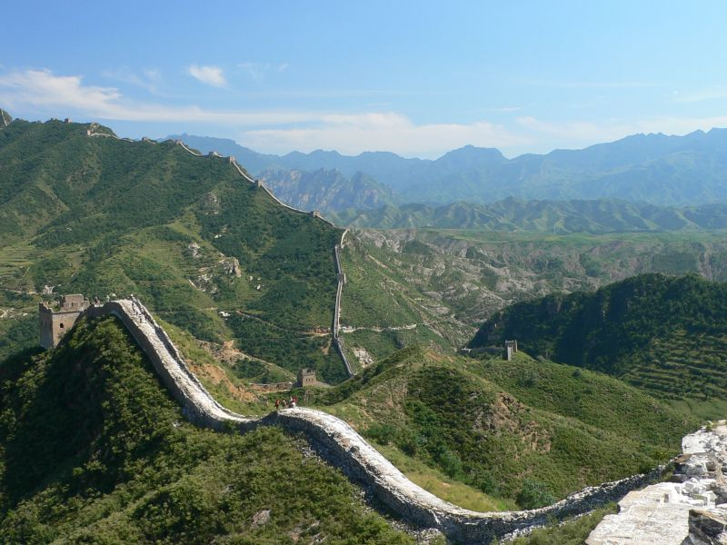

La Grande Muraille (chinois simplifié : 长城 ; chinois traditionnel : 長城 ; pinyin : Chángchéng ; Wade : Ch'ang²ch'eng² ; litt. « la longue muraille »), aussi appelé « Les Grandes Murailles » est un ensemble de fortifications militaires chinoises construites, détruites et reconstruites en plusieurs fois et à plusieurs endroits entre le IIIe siècle av. J.-C. et le xviie siècle pour marquer et défendre la frontière nord de la Chine. C'est la structure architecturale la plus importante jamais construite par l’être humain à la fois en longueur, en surface et en masse. Populairement, on désigne sous le nom de « Grande Muraille » la partie construite durant la dynastie Ming qui part de Shanhaiguan sur le territoire de la ville de Qinhuangdao dans la province du Hebei à l’est pour arriver à Jiayuguan dans la province du Gansu à l’ouest. Sa longueur varie selon les sources. Selon un rapport de 1990, la longueur totale des murs serait de 6 259,6 km. En raison de sa longueur, elle est surnommée en chinois « La longue muraille de dix mille li » (chinois simplifié : 万里长城 ; chinois traditionnel : 萬里長城 ; pinyin : Wànlǐ Chángchéng ; Wade : Wan⁴li³ Ch'ang²ch'eng²), le li étant une ancienne unité de longueur chinoise et dix mille symbolisant l’infini en chinois. Ce surnom peut cependant être pris dans son sens littéral par approximation, 6 700 km faisant 11 632 li dans sa valeur généralement considérée de 576 m ou 13 400 li dans sa valeur actuelle d’exactement 500 m. En moyenne, la muraille mesure 6 à 7 m de hauteur, et 4 à 5 m de largeur. En avril 2009, l'Administration d'État chargée du patrimoine culturel, ayant utilisé des technologies de mesure plus récentes, révise cette mesure et déclare une longueur de 8 851,8 km dont 6 259,6 km de murs, 359,7 km de tranchées et 2 232,5 km de barrières naturelles, telles des montagnes ou des rivières. Le même service a publié en juin 2012 une mise à jour de son étude, et estime désormais à 21 196,18 km la longueur totale de la Grande Muraille. Cette nouvelle estimation prend en compte des parties actuellement détruites. Depuis 1987, la Grande Muraille est classée au patrimoine mondial de l'UNESCO sous le numéro 4386. En 2015, le constat est fait d'une nette dégradation de l'état général de la Grande Muraille due principalement aux conditions climatiques et aux activités humaines, et de la nécessité d'intervenir rapidement pour assurer sa sauvegarde.